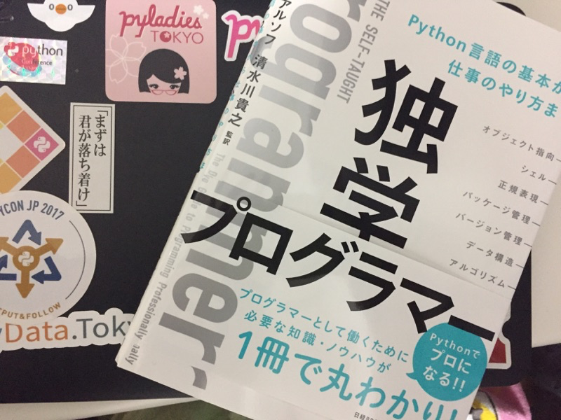
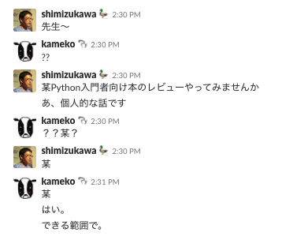

鉄は熱いうちに打て
=============================
独学プログラマーが発売されるってよ！¶
2018-02-17
2018年2月23日に 独学プログラマー という本が発売されます。
献本頂きました！
なんで献本していただけたかというと、レビューアーだからです。(｀・ω・´)ｂ
その話の前に本の紹介をします。
Pythonを学ぶ本というよりは、どうやってエンジニアになるのか？なにを学んでいくのが大事なのか？的な本です。 エンジニアを目指す方や学生さんはこの本を最初に読んでモチベーションを限界まで高めてから、さらに一つ一つの分野を深く学んでいくと良いと思います。 有名エンジニアの名言も載っているのでグッグとモチベーションがあがります！！
更なる本の紹介は、監訳者の清水川さんのブログを見よう。（丸投げ）
Blog書きました。 『独学プログラマー』 The Self-Taught Programmer の紹介 https://t.co/yVaXHNpZHn - 清水川Web
— Takayuki Shimizukawa (@shimizukawa) 2018年2月15日
Blog書きました。 『独学プログラマー』 の見本誌が届いた！ https://t.co/FHWHKLTOPz - 清水川Web
— Takayuki Shimizukawa (@shimizukawa) 2018年2月16日
本が出るとこんなに嬉しそうなのですね。しゅごい。
見本を手にご満悦の監訳者近影です #独プロ (@ 株式会社ビープラウド - @beproud_jp in 渋谷区, 東京都) https://t.co/8ZHHjCMhCB pic.twitter.com/57EEkrXLQs
— Takanori Suzuki (@takanory) 2018年2月16日
思い起こせば2017年11月30日の昼下がりに清水川さんにスラックで打診されました。
本のレビューアーは会社の仕事でやったことはあったのですが、プライベートでは初めてでした。翻訳で、原著の内容は変えられないみたいだし、誤字脱字、表現を修正すればいいのよね。という軽い気持ちで受けました。
しかし、それは地獄のはじまりだったのです。
なにが悪かったかというと受けた時期が悪かったです。 この時、私は 12月に毎日ブログを書くぜ！ と強い決心をしていました。 11月中に5本位書いていたのですが、とうとう12月になってしまう！！！！どーしよーーー！！という時期でした。
ここから毎日、「レビューもしたい。ブログも書きたい。英語の勉強もしたい。」というプライベートの時間をどう使うのか葛藤する日々がはじまったのです。（大げさ）
とりあえず、原著がKindle版で500円くらいだったので買って、会社帰りの電車で読み始めました。 読んでびっくり。Pythonの初心者本だと思っていたらぜんぜん違う！！Bashとか、Package Managersとか書いてる。 英語で名言的なの書いてあるよ！？ヒ～！ヒ～！ヒ～！
安請け合いは良くないなと思いましたよ。(´・ω・｀)
名言はいい訳をあてるのは難しいですね。普通のところも英語そのままってわけにもいかないところもあって、訳すのも大変だと思いました。
でも、なんとかブログも毎日書けたし、レビューも最後までできたので、いい経験になりました。やって良かったです。
その疲れが1月に出て、ブログも書けなかったです。2月は2月で忙しかったのですが、その話はまた別の機会に。
教訓：レビューも結構大変です
みんな買ってねー！
清水川さんと新木さんは打ち上げに誘ってねー！！よろよろ！！